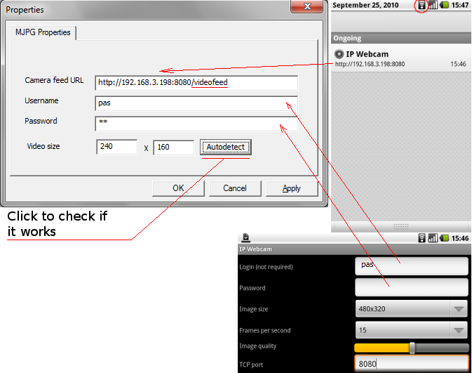

Note: These drivers can only emulate video, not audio.
Note: For maximum compatibility set the camera resolution to 320x240.
My driver doesn't have the unregistered banner and is free for any use.
Download it here.After installing a driver run the configuration utility, enter $URL$/video into URL field, fill username/password as you configured them in application, and press Autodetect to check if it works and automatically detect the resolution.
Now, start your favorite videochat application and enjoy your new webcamera!
Linux driver allows you to use both audio and video on Ubuntu Linux and compatible operating systems. It's both free and open source.